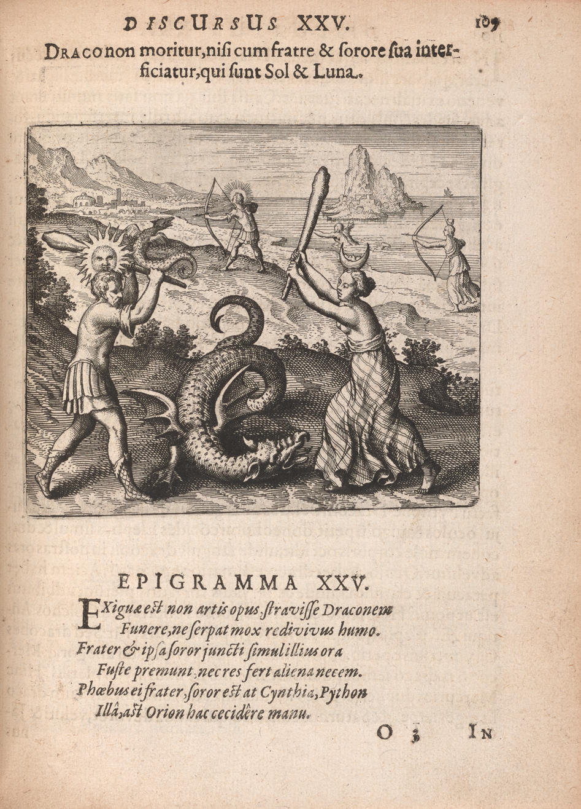

Atalanta fugiens proposes at least two ways of reading its contents (Figure 1). First and foremost, Maier’s title page offers up a story. The etchings tell the tale of Atalanta, Hippomenes, and a trio of apples, while the title itself, Atalanta fleeing, puts Atalanta in motion, thereby inviting the reader to follow her flight to the final pages of the book. Even as the title page (literally) frames Maier’s masterpiece with a straightforward visual narrative, however, it immediately suggests a very different mode of reading as well. “Accommodating partly for to the eyes and understanding [intellectus]…partly to the ears and recreation of the mind,” Maier’s title continues, the “New Chymical Emblems relating to the secrets of nature” within were “to be seen, read, meditated [upon], Understood, distinguished, Sung and Heard.”1 With this subtitle, then, Maier underscores the fact that Atalanta fugiens is also a collection of emblems, a genre that demands of its reader not flight and forward motion, but pause, lingering, and stillness. Moreover, the emblematic mode of reading demands multiple senses, not just the intellect or eyes, but also the voice and ears. In his “Preface to the Reader,” Maier points to the potential rewards of reading in these complicated ways, expressing his wish that “the learned have these figures in good estimation which are so useful and serviceable both to the understanding and many of the senses, that great utility besides delight and recreation may be expected from them.”2
Figure 1
We might think of these two modes of reading as horizontal and vertical. The horizontal mode encourages the reader to turn the page, reading sequentially in search of a narrative thread across multiple emblems, while the vertical mode asks the reader to linger on a single emblem in order to explore connections up and down and among its parts. This essay will explore these two approaches to reading Atalanta fugiens, arguing that their juxtaposition transforms Atalanta fugiens into a flexible instrument for generating new knowledge about chymistry. It is significant, however, that both modes of reading require the reader to activate multiple senses—not only the intellect, but also the eye and ear. This, I argue, makes Atalanta fugiens into a commentary on the place of reading and writing—and their relationship to other bodily ways of knowing—in the production of chymical knowledge. 3Atalanta fugiens cultivated particular habits of mind and body, making a serious point that chymical truths were divine truths, and that the chymist must deploy the intellect and the senses to uncover chymical secrets. In showing his readers how to read Atalanta fugiens, in other words, Maier taught them how to practice chymistry, and ultimately to feed both the intellect and the soul with new truths about nature’s chymical arcana.
Maier was in fact quite explicit about how he thought aspiring chymists 4 should read his book. His title page and author’s epigram point towards the most straightforward horizontal way to approach the book, which is to follow the story of the race, the consummation of Atalanta and Hippomenes’ love and, finally, their ultimate transformation into lions. 5 The book first sets out this theme in the images on the title page. We see the Garden of the Hesperides (guarded by a many-headed dragon, Ladon), Venus, Cybele’s temple, Atalanta and Hippomenes (both during their race and after their transformation into lions), all of which outline the tale to follow.
Turning the page, however, the reader finds not images but words: Maier’s verse epigram, which expands the visual cues on the title page to alert the reader to his basic chymical interpretation. Atalanta represents philosophical mercury and Hippomenes philosophical sulfur, Maier explains, the two elemental qualities of matter that the alchemist must combine in order to produce the philosophers’ stone. By linking Atalanta and Hippomenes’ union and transformation into lions to the alchemist’s production of the philosophers’ stone, Maier suggests that a skillful chymical interpretation of the lovers’ tale might reveal how to make this most precious of alchemical desiderata.
Atalanta fugiens immediately complicates this proposal, however, for it turns out that the story of Atalanta and Hippomenes does not, in fact, carry through the emblems. It is tempting to imagine, for example, that the order of voices in the canons would mirror Ovid’s plot, so that Atalanta’s voice would begin the canon when she is in the lead, the apple part would begin when Hippomenes tosses them in front of Atalanta, and, eventually, Hippomenes would begin the canons as he surges ahead to take the lead. This is not the structure of the canons, however. Rather, the apple is nearly always the lead voice, followed by Atalanta, then Hippomenes, foiling any neat correlation between the order of the voices and the shifting lead in the race. Nor do Atalanta, Hippomenes, and the Apple sing about their contest and its fallout; rather, their lyrics, which come from the related epigrams, are about chymical epistemology, processes, and materials. Finally, while the images in the emblems are full of classicized figures and landscapes, Atalanta, Hippomenes, and the goddesses who shape their narrative never appear in the images after the title page. In short, the conceit of Atalanta fugiens and Maier’s initial frame for his chymical treatise falls away almost immediately, leaving the reader without the promised narrative thread to follow through the fifty emblems.
Maier’s bait and switch is productive, however, causing the reader to stumble for a moment, to pause and consider how to proceed without Atalanta as the promised guide. Fortunately, the experienced reader could recover her footing quickly by drawing on experience with the two genres that informed the structure of Atalanta fugiens: emblems and illustrated alchemical texts. The emblem book was the most obvious model for reading Atalanta fugiens, given the fact that Maier refers to his book as “New Chymical Emblems relating to the secrets of nature.” The fashionable print genre of the emblem book emerged out of older traditions such as the Greek epigram, hieroglyphics, imprese, florilegia, medals, and heraldry and exploded in the wake of Andrea Alciato’s 1531 Emblematum liber6 (Figure 2).
Figure 2
In general, collections of emblems were meant to be read vertically, that is one at a time and top to bottom, rather than sequentially, one emblem after the next. Typically, emblems used the motto- pictura -epigram format to convey truths about anything from love to politics and then to impress those insights upon the reader’s memory. The relationships among the three parts were often enigmatic, spurring the reader to reflection, creativity, and play, and making even a single emblem a perfect game in learned circles by providing fodder for erudite displays of virtuosity. 7 Maier’s readers may also have been accustomed to thinking about alchemy, in particular, with both words and images, particularly in the German-speaking lands, where the alchemical illustrated poem, or Bildgedicht, emerged. This late medieval tradition is epitomized by the Rosarium philosophorum, which wove together quotes from older alchemical texts with a series of twenty images (themselves “quotes” from earlier manuscript images), and found its way into print with Part II of De Alchemia Opuscula complura veterum philosophorum... (Frankfurt, 1550) (Figure 3). The sequence of images in the Rosarium philosophorum suggested a horizontal reading, as they followed the union, death, and resurrection, and transformation of Sol and Luna into the philosophers’ stone. Atalanta fugiens was hardly sui generis, in other words, but rather rested on two well-established traditions, the humanist emblem and illustrated alchemical texts, both of which would have prepared readers/viewers for the kinds of vertical and horizontal reading that Maier’s emblems demanded. 8
Figure 3
Readers of Atalanta fugiens who were new to chymistry and mostly familiar with emblem books (rather alchemical Bildgedichte) likely would have approached any given emblem vertically. That is to say, they would have begun by reading the motto at the top, probably in Latin, but perhaps also (or instead) with a glance to the left to read it in German. Next, their eyes would have fallen on the image or pictura, which reinforced the message of the motto, and then, finally, on the epigram and discourses below, which expanded on the motto’s meaning. Emblem 11 offers a good example of how this works (Figure 4) The Latin motto, “Whiten Latona and tear your books,” is repeated in the pictura, where we see a woman seated in the center, being washed on the left by another classical figure. At her feet she has two children, one of whom has the head of a sun, and the other a moon on her head. On the right, a third classical figure is ripping up books. The pictura divides neatly into two halves, right under the ampersand of the motto, closely linking the bifurcated image to the motto above.
The Latin epigram below the picture gives more detail, but the learned reader would have understood Maier’s classical reference immediately. Latona is the mother of Apollo and Diana (gods of sun and moon), represented as the twins at her feet. The beginning of the epigram confirms this: “Ancestors (of truth no doubt) to us relate / Latona's twins produced from Jove the great.” 9 A reader familiar with the alchemical corpus, moreover, would have recognized Maier’s clever word play as well. The motto, “Whiten Latona, and tear your books,” cites a well-known alchemical injunction warning against confusing or misleading books: “Make Laton white and tear your books, that your hearts may not be destroyed.” 10 Laton (or latten) is a yellow alloy of gold and silver that some alchemists believed must be purified further to produce the philosophers’ stone. 11 Maier makes a slight adjustment, however, changing “Laton” into “Latona,” which gives him the opportunity to put a classicizing spin on chymical materials. “ Some say She's Sol with fair fair Diana mixed, / Having a face most white, some black betwixt,” he continues; in other words, Latona can produce sun and moon, or gold and silver, but she is impure, flecked with dark spots on her face. 12 “Study my dear!” Maier concludes, “to wash these spots away, / Then burn those books which led your thoughts astray.” 13 The text and image on the right side of Emblem 11, then, may be read as a proposal for action, an injunction to set books aside and manipulate matter in the laboratory (in this case, whitening and purifying an impure alloy as a step towards producing the philosophers’ stone and, ultimately, gold and silver).
This kind of emblematic vertical reading guided readers down through the parts of any given emblem in Atalanta fugiens, leading them deeper into its chymical sec rets. Maier’s inclusion of music, however, made even this kind of vertical reading more complex. What if a European reader, accustomed to reading left to right, began with the German motto on the upper left, his eye then scrolling down through the music to the German epigram before moving across to the Latin version on the right that replaced the music with an image? What made Atalanta fugiens unique among emblem books and alchemical Bildgedichte, after all, was Maier’s inclusion of music, so it seems fitting that the fugue might have drawn a reader’s attention first, rather than the more familiar motto, image, and epigram on the right. Starting on the left, the reader would find the familiar canon format, with the Apple leading, then Atalanta, followed by Hippomenes. Their voices and melodies are framed above and below with German verse, but they sing in Latin, and this encourages the reader’s eye to wander down and to the right to the Latin epigram that provided the lyrics. Moreover, Atalanta, Hippomenes, and the Apple sing about chymistry, namely Laton(a) and the value of laboratory praxis over confusing books. If we remember that Maier’s readers would have encountered fifty emblems in Atalanta fugiens, then this repeated slippage in the music from Ovid’s tale into the laboratory becomes something of its own cantus firmus, a steady and recurrent reminder that Maier’s book is really about chymistry, despite its literary trappings.
Let us imagine a different kind of reader, however: someone familiar with alchemical texts or Bildgedichte such as the Rosarium philosophorum, and thus expecting the emblems in Atalanta fugiens to outline a series of steps, perhaps for producing the philosophers’ stone. By Maier’s day, moreover, even the emblem genre had begun to move in this direction, evolving from its original form as a collection of self-contained individual emblems into more coherent thematic collections. A reader well-versed in alchemical texts, therefore, may have been inclined to dwell less on text and image in a single emblem, but rather to move horizontally instead, locating connections across multiple emblems. This possibility is in fact what made Atalanta fugiens especially promising. By framing his collection of emblems with the narrative of Atalanta and Hippomenes, telling his readers that the lovers’ tale should be understood as a method for making the philosophers’ stone, and then reminding them of this connection again and again at the outset of each of the fifty fugues, Maier suggested that there was a narrative linking his emblems after all. Certainly, Atalanta and Hippomenes disappeared after the opening pages, but perhaps the emblems told a tale of chymical processes instead, a step-by-step series of instructions for making the philosophers’ stone.
Maier’s readers, in short, may have approached Atalanta fugiens with different kinds of expertise and expectations, and this would have produced different kinds of readings and different kinds of lessons. If we envision that our reader has just finished reading and pondering Emblem 11, for example, where might he go from there? Perhaps he would simply flip the page to follow Atalanta and Hippomenes into Emblem 12, reading the emblems “in order.” He also might have decided to obey Maier’s exhortation to set aside confusing books entirely for the laboratory, putting down Atalanta fugiens and stoking a fire instead. On the other hand, this reader may well have chosen to remain within Atalanta fugiens, at least for the moment; that is, instead of proceeding from Emblem 11 to Emblem 12 (thus proceeding sequentially), he might have jumped from Emblem 11 into other parts of the book.

Figure 5
He might have returned to the title page, for example, where the many-headed dragon Ladon sits in the Garden of the Hesperides guarding the golden apples, to ponder yet another dimension of Maier’s play on Laton/Latona (Figure 1). Or, this same reader might have flipped ahead in the book instead from Emblem 11 to Emblem 25 (Figure 5), “The Dragon dies not, except he be killed by his brother and Sister, which are Sol and Luna.” In this emblem, we see Latona’s twins Sol and Luna again, now all grown up and attempting to bludgeon a dragon who, we are told, can only be killed by Sol and Luna. This dragon’s tail recalls Ladon’s on the title page, but Maier’s epigram tells us that the dragon here represents philosophical mercury, which can only be coagulated with Sol and Luna. Maier is again pointing to the laboratory, but one wonders how this step is related to the one in Emblem 11 before, or, for that matter, any of the others in between? Perhaps there is a chymical narrative threaded through the book after all, if one only knew how to find it?